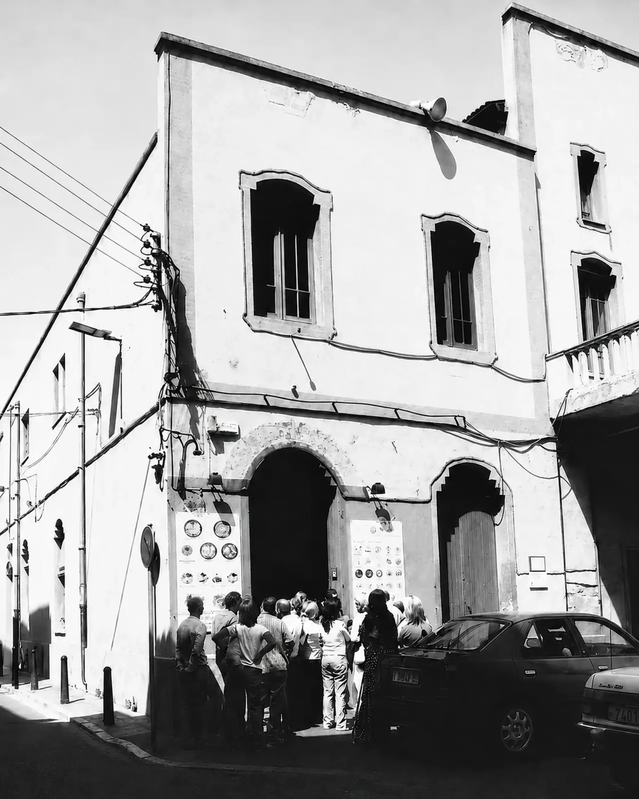
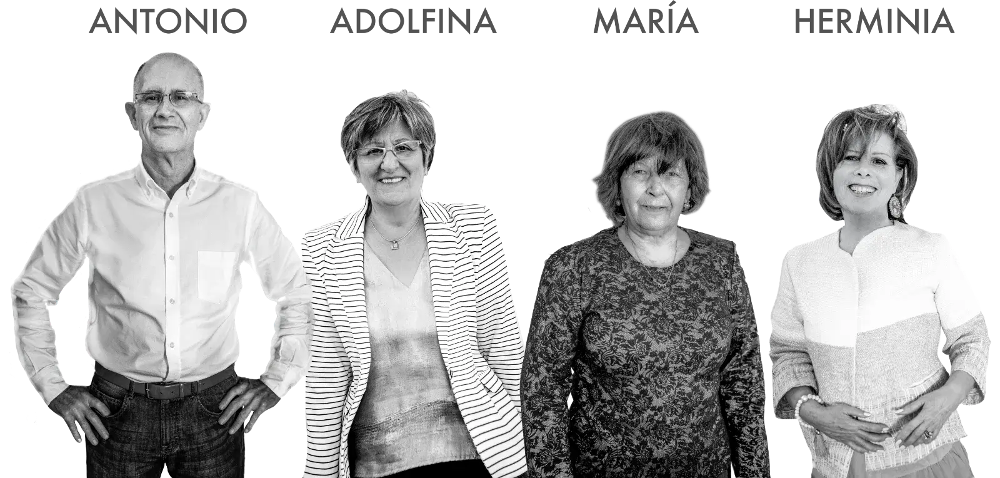
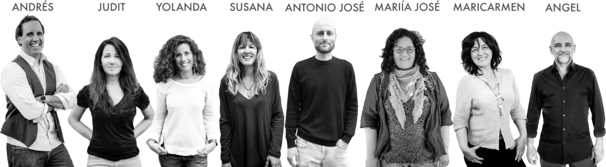
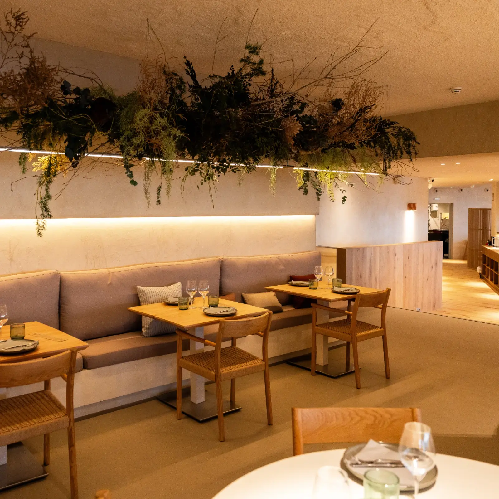
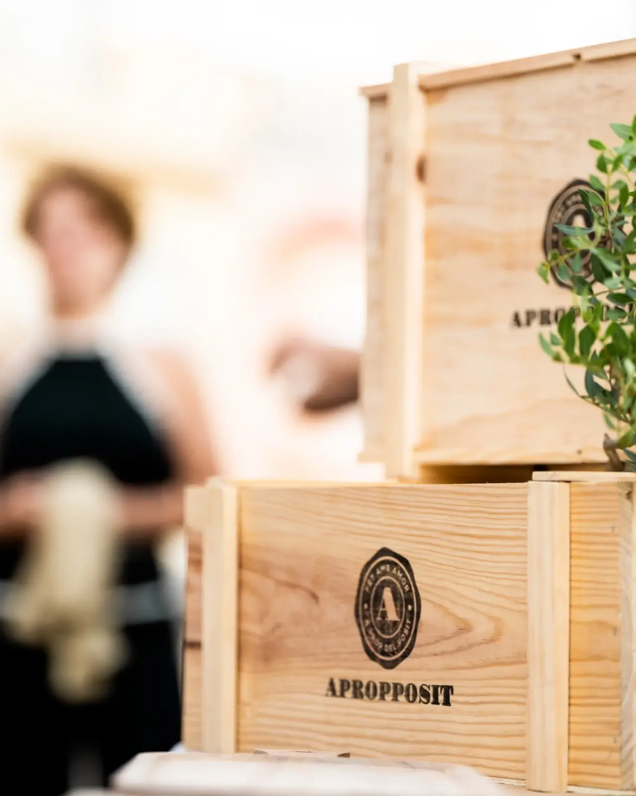

Cerramos el recorrido 2026 frente al mar
El jueves 5 de noviembre cenamos en El Pòsit de la Pineda, en Vila-seca. Es la octava y última visita del recorrido de este año, y con ella se cierra la temporada 2026. Después de la Part Alta de Tarragona volvemos al mar, a primera línea de playa.
La casa abrió en mayo de 2024, así que es la más joven de las que hemos visitado. Pero detrás hay un grupo familiar que lleva más de medio siglo cocinando producto de mar, y un edificio con una vida anterior que merece contarse: aquí estuvo la discoteca Level.
El nombreQué es, exactamente, un pòsit
Un pòsit de pescadors es el gremio de los pescadores de un tramo de costa: el antecesor directo de las actuales cofradías. Los representaba ante la administración y gestionaba la lonja, la subasta diaria del pescado. La palabra viene del latín positus, depósito; en castellano, un pósito era el almacén municipal de grano que prestaba cereal a los agricultores en los años malos.
Los pósitos de pescadores se organizaron como cooperativas a partir de 1918, y conservaron ese nombre hasta la Guerra Civil, cuando el franquismo los rebautizó como cofradías. Es decir: «pòsit» es el nombre viejo, el de la época cooperativa. Y el restaurante lo lleva por un motivo muy concreto.

El edificio del Pòsit de Pescadors de Cambrils, al lado de la lonja. Ahí empezó todo, en 1973
La familiaDe Granada a Cambrils, en un mes
En 1973, Antonio García Sánchez vino a Cambrils a ver a su novia, que trabajaba en Casa Gatell. Se encontró con que traspasaban el bar del Pòsit de Pescadors, llamó a su cuñado —que tenía un bar en Granada— y en un mes habían abierto, con todos los ahorros de la familia metidos dentro. Cocinaban en dos planchas, al lado de la lonja, lo que se acababa de subastar.
La familia entera se mudó desde Granada y el primer año vivieron dentro del bar: convirtieron parte de los almacenes en dormitorios. En 1977 murió el padre, con 47 años, y el tío cogió las riendas. Todos los primos trabajaron allí de niños. Esa es, en dos líneas, la historia que explica por qué hoy hay cuatro casas.


Cuatro direcciones y una cocina central
El Pòsit de Cambrils (1973) es la casa madre, y hoy, con sus mil metros cuadrados, el restaurante más grande del pueblo. El Pòsit del Serrallo (2016) ocupa el edificio restaurado de la antigua Confraria de Pescadors de Tarragona, que ganaron en concurso público. El Bar del Pòsit (2018) es el hermano informal, en Cambrils. Y El Pòsit de la Pineda (2024) es el último. Detrás de los cuatro hay una cocina central en Reus, abierta en 2008, donde elaboran las bases, los caldos y la pastelería.
Y una casa que no llegó a abrir: cuando pusieron en marcha la cocina central tenían pensado abrir otro Pòsit en Reus, en la plaça del Mercadal, porque mucha de su clientela venía de allí. Hicieron un estudio de mercado, no lo vieron claro y se quedaron como estaban.
El socioÀngel Pérez, el hombre que venía de la noche
Àngel Pérez es copropietario del grupo, director comercial y responsable de sostenibilidad. Segunda generación. Y antes que nada fue disc jockey durante veinticinco años, con la discoteca Black Bear de Cambrils: entró en el restaurante en 1996 y hasta 2015 hizo las dos cosas, de día la casa y de noche la cabina. Desde 2010 dirige el grupo con su primo Antonio. Hoy es vicepresidente de Restauración y Sostenibilidad de la federación de hostelería de la provincia, y ya nos ha acompañado en alguna de nuestras cenas.
La casualidad tiene su gracia: el hombre que vivió media vida de la noche acabó abriendo un restaurante dentro de una antigua discoteca.
No queremos crecer por crecer.
Àngel Pérez · Ara, 2024
Dos plantas sobre la arena
El Pòsit de la Pineda abrió el 13 de mayo de 2024 en el edificio de la antigua discoteca Level, que fue un referente de la música electrónica en los años noventa. Son dos plantas con terrazas y vistas al mar, en el paseo de La Pineda, con interiorismo del estudio 05 Cristina Arnedo, de Reus.
La cocina es marinera y de proximidad —arroces, calderetas, suquet, fideos rossos y negros—, con una diferencia respecto a las otras casas del grupo: aquí hay brasa. Y un detalle que les define: alrededor del 90% de la carta es sin gluten, con el personal formado y el restaurante asociado a la Associació de Celíacs de Catalunya.

La sala, en el edificio donde estuvo la discoteca Level
Los premiosUna casa que lleva años hablando de sostenibilidad
En noviembre de 2025 el grupo recibió el Premio a la Sostenibilidad de los Premios Nacionales de Hostelería, en Castellón, con una candidatura presentada por la federación provincial. No era el primero: en 2022 fueron mejor pyme sostenible de la demarcación, y en 2017 el programa Joc de Cartes de TV3 los eligió mejor restaurante sostenible.
Y mientras preparábamos esta previa llegó una más: el 21 de octubre, El Pòsit del Serrallo entró en la lista de los 25 mejores restaurantes informales de España de los premios Travellers' Choice «Lo mejor de lo mejor» de Tripadvisor, que se deciden con las opiniones de los usuarios. Es el único establecimiento de Tarragona presente en las categorías de este año, con un 4,6 sobre 5 y casi tres mil opiniones.
Ellos lo resumen en cuatro palabras: personas, producto, planeta y patrimonio. Energía cien por cien renovable, huella de carbono medida y compensada, agua microfiltrada en lugar de botellas, uniformes de material reciclado y pescado con certificado de pesca sostenible. Y una marca propia de vinos y aceite, Apropposit, que trabaja con trece productores del territorio en un modelo de comercio justo y tiene vinos de las ocho denominaciones de origen de la provincia.
La clave es el bienestar del trabajador: que esté motivado, que sepa que es importante y se sienta valorado.
Àngel Pérez

Apropposit, su marca de vinos y aceite, hecha con bodegas de la provincia
El equipoQuién nos recibirá en La Pineda
Al frente de la casa está Pedro Almazán, director y jefe de sala. En la cocina, la xef Mercè Prado, con Fran como jefe de cocina. Son ellos quienes preparan el menú de la velada y quienes nos lo irán explicando plato a plato.
Tradición para saber de dónde venimos, innovación para decidir hacia dónde vamos.
Mercè Prado · xef de El Pòsit de la Pineda
Lo sabremos unos días antes
El menú de la velada todavía no está cerrado, y lo publicaremos aquí en cuanto lo tengamos. Mientras tanto, lo que la casa defiende en su carta da bastantes pistas: arroces —de gamba roja de Tarragona, de pato del Delta, senyoret, negro de sepia—, romescada de rape, bacalao en suquet de pescador y la brasa de mar, con pulpo, calamar y rodaballo.
Nos vemos el 5 de noviembre. La crónica, como siempre, unos días después.
Fotografías: Grup El Pòsit, cedidas por el restaurante. Fuentes: datos facilitados por Àngel Pérez, web del grupo, entrevista en Tarragona Empresarial (noviembre de 2025), Diari de Tarragona, La Ciutat, AEHT y Ajuntament de Cambrils.